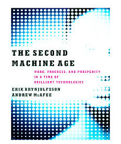

Automating Mathematics?
Siddhartha Gadgil
Department of Mathematics
Indian Institute of Science
Bangalore
 |
1997 | |
 |
2017 | |
 |
? |
Whether? When? How? |
Computer Proofs
in
Mathematics
Universal deducer?
- A universal deducer is a program which, given a mathematical statement, either proves it is true or proves it is false.
- By results of Church, Gödel, Turing, such a program is impossible.
- Practically, we can conclude that there is no best deducer, as any given proof can be found by some deducer but no deducer can find all proofs.
Some computer-assisted proofs
- Four-colour problem: Any map can be coloured with at most $4$ colours.
- Kepler Conjecture: The most efficient way to pack spheres is the hexagonal close packing.
- Boolean Pythagorean triples problem: Is it possible to colour each of the positive integers either red or blue, so that no Pythagorean triple of integers $a$, $b$, $c$, satisfying $a^{2}+b^{2}=c^{2}$ are all the same color?
- All these proofs are long (perhaps unavoidable).
Robbins conjecture
- Robbins conjecture was a conjectural characterization of Boolean algebras in terms of associativity and commutativity of $\vee$ and the Robbins equation $\neg(\neg(a\vee b)\vee \neg(a \vee \neg b)) = a$.
- This was conjectured in the 1930s, and finally proved in 1996 using the automated theorem prover EQP.
- So far, this seems to be the only major success of deductive theorem provers.
Formal Mathematical Proofs
- A formal proof is a finite sequence of sentences, each of
which:
- is an axiom (something we believe true about the universe), or
- is an assumption, or
- follows from the earlier sentences by a rule of inference.
- A formal proof can be checked mechanically.
Formal proof of infinitude of primes in Mizar
reserve n,p for Nat;
theorem Euclid: ex p st p is prime & p > n
proof
set k = n! + 1;
n! > 0 by NEWTON:23;
then n! >= 0 + 1 by NAT_1:38;
then k >= 1 + 1 by REAL_1:55;
then consider p such that
A1: p is prime & p divides k by INT_2:48;
A2: p <> 0 & p > 1 by A1,INT_2:def 5;
take p;
thus p is prime by A1;
assume p <= n;
then p divides n! by A2,NAT_LAT:16;
then p divides 1 by A1,NAT_1:57;
hence contradiction by A2,NAT_1:54;
end;
theorem {p: p is prime} is infinite
from Unbounded(Euclid);
The full formal proof is 44 lines
- Verifying a formal proof is purely mechanical.
- However, to find the proof, in addition to (mechanical) computations and deductions,
- We stated useful lemmas, or judged that previously known results were useful.
- We considered the smallest factor $> 1$, conjectured and proved the statement that it was prime.
- We considered (a prime factor of) $n! + 1$, based on backward reasoning.
- It is hard to formulate rules for these steps.
Puzzles, Games, Reasoning
Puzzles
- Some puzzles: jigsaw, sudoku, detective stories, quiz questions, planetary motions, ...
- A puzzle is a precisely stated problem for which
- it is (fairly) easy to check that a solution is correct, but
- it is hard to find the solution.
- A solution may be formal or informal.
- We solve puzzles by a mixture of deduction (algorithms) and intuition.

Deductive reasoning/Algorithms
- We perform a small number of steps, each step a calculation or move or deduction.
- The steps are based on a small number of rules (possibly depending on a small number of parameters).
- A computer's notion of small is very different.
- We can try to solve harder problems by inventing better algorithms: multiplication with carry-over, fingerprints, SMT solvers.
Tacit knowledge & Intuition
- Tacit knowledge is the kind of knowledge that is difficult to transfer to another person by means of writing it down or verbalizing it.
- Examples: riding a bicycle, speaking a language.
- Experts have a lot of tacit knowledge, typically learned through experience.
- Intuition is based on tacit knowledge.
- While intuition is sometimes wrong, to be useful it should be correct
often
enough.
- A hunch is sometimes correct.
- A judgement is often correct.
Solving puzzles
- Checking a solution should be purely deductive.
- However, finding a solution involves:
- deciding what to consider - a policy, which may use intuitive hunches, and
- deciding how promising the present approach/situation is - the value, which may use intuitive judgements.
- A computer following a purely algorithmic approach can compensate by following up on far more approaches, and looking for consequences further ahead before deciding the value.
Computers and Games
Rewards, values and policies
- The rules of a game (e.g. chess) tell us
- what moves we can make.
- what reward we get at a stage - e.g. win/loss/draw at the end.
- In tic-tac-toe, we can simply calculate the reward.
- In most cases however, we need
- A policy - what moves to consider.
- A (relative) value telling us what future reward we can expect based on the present position.
Kasparov vs Deep Blue
- In Chess, a basic value is obtained by counting pieces and pawns with weights.
- Standard openings also give a policy during the early stages of the game, as do endgame tables.
- Deep Blue, and chess theory, extend these to elaborate (rule based) values and policies.
- The value and policy functions of Kasparov were far better, but compensated for by Deep Blue being able to consider far more move sequences.
AlphaGo vs Lee Sedol
- In the chinese game Go, the number of legal moves is much larger, so trying everything means we cannot look many moves ahead.
- More importantly, it is very hard to describe a good value function.
- This makes it far harder for computers.
- Yet, in March 2016, a Go playing system AlphaGo defeated 18-time world champion Lee Sedol.
- In January 2017, AlphaGo defeated the world number one Ke Jie comprehensively.
AlphaGo and Learning
- The policy and value functions of AlphaGo are deep neural networks that were trained.
- The policy network was trained by learning to predict the next move from games of expert players.
- The value network was trained by AlphaGo playing against versions of itself.
- AlphaGo considered fewer sequences of moves than Deep Blue.
- AlphaGo came up with unexpected moves.
AlphaGo Zero and Alpha Zero
- AlphaGo was succeeded (and defeated) by AlphaGo Zero, which learnt purely by self play.
- Its successor, AlphaZero, could master a variety of similar games starting with just the rules.
- AlphaZero took just 4 hours to become the strongest chess player on the planet (beating a traditional chess program, Stockfish).
- AlphaZero “had a dynamic, open style”, and “prioritizes piece activity over material, preferring positions that looked risky and aggressive.”
Artificial Intelligence elsewhere.
Word Embeddings
- To give words a structure and capture relations, words are embedded as points in space.
- To do this, (in Word2Vec) we set up the problem of predicting a word given its neighbours.
- We look for solutions of this problem that involve mapping words into space, and predicting from neighbours using the points.
- Analogies such as Paris is to France as Berlin is to Germany are captured by vector operations.
Generative Query network
- In an artifical 3D environment, the network observes 2D images from a few positions.
- It has to predict the observed image from a new position.
- To do this, the 2D image was mapped to a concise representation by a network, which was then used to predict the image from a different viewpoint.
- The concise representation factorized by colour, shape and size (among other things).
Generative Adversarial Network
- These consist of a pair of networks, contesting with each other.
- One network generates candidates (generative) and the other evaluates them (discriminative).
- For example the discriminative network tries to distinguish between real images and synthetic ones generated by the generative network.
Distributional reinforcement learning
- In temporal reinforcement learning, a network tries to predict (average) future rewards.
- However, sometimes the reward is either very big or very small, so the average reward is misleading.
- In distributional reinforcement learning we have several predictors, which react differently to positive and negative errors.
- Recently, similar distributions of dopamine cells was found in the brains of mice.
- A question on a blog of Terence Tao, asked to him by Apoorva Khare, was answered in PolyMath 14.
- A crucial step in the discovery was a computer generated but human readable proof I posted.
Interactive Theorem Provers
Interactive Theorem Provers
- Interactive Theorem Provers are software systems where proofs are obtained by human-machine collaboration.
- The computer both finds (parts of) proofs and checks correctness.
- Some very large mathematical proofs have been verified by such systems.
- The ease of proving in such systems depends on how good it is at finding proofs.
Who guards the guards?
- A computer verified proof is only as trustworthy as the system that verified the proof.
- Following the de Bruijn principle, proofs are verified by a small trusted kernel, which can be thoroughly checked.
- For example, the lean theorem prover has three (small) proof checkers written in three languages.
Foundations of mathematics
- Foundations are rules for describing objects and statements and making deductions.
- The standard foundations of mathematics are based on Set Theory and First-order logic.
- However, formal proofs in these foundation become long and opaque.
- Instead, interactive proof systems use richer foundations that have evolved over time.
- A dramatic advance in the new foundations came about with the recent discovery of connections with topology, a branch of mathematics.
Formal methods
Mathematical proofs elsewhere
Formal methods
- We specify and describe software, hardware etc. in precise mathematical terms.
- We give mathematical proofs to ensure correct behavior.
- This gives a much greater certainty of correctness.
- However, proofs are much harder than tests.
- Formal proofs use interactive theorem provers.
Do we need completely correct always?
 |
Pentium FDIV Bug | Fixing an error is very costly |
 |
Therac 25 radiation machine | Safety critical |
 |
WhatsApp Pegasus attack | A bug is a vulnerability |
Users of formal methods
 |
Intel Chips | Fixing an error is very costly |
 |
Paris driverless metro | Safety critical |
 |
Scala dotty compiler | A bug is a vulnerability |
The future of computer proofs?
 |
 |
|  |  |
-
Artificial Intelligence can:
- Make moves that we can appreciate.
- Judge value based on future rewards.
- Show originality.
- Acquire tacit (to us) knowledge.
- Work with limited and/or unstructured data, by self-play and by synthetic tasks.
- Organize observations naturally and efficiently, capturing global structure and enabling analogies.
- Foundations give (efficient, modular) rules for generating objects, statements, proofs.
- A reward can be defined in terms of power and efficiency of proving/disproving statements.
- Mathematical heuristics can be captured with composite moves, and used for policy functions.
- We can define reasonable value functions, e.g. recognizing non-trivial lemmas.
- Behaviour cloning can use formalized mathematics, natural language processing.
- Automating mathematics? It appears that there are clear approaches and no evident barriers.